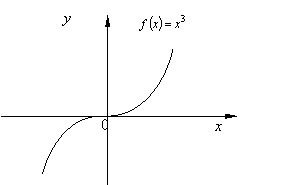

П 19ТУ№9.
Для функции в
точке  выполняется необходимое
условие экстремума . Однако точка не является точкой экстремума этой
функции, в ней не выполняется достаточное условие экстремума, т.к. для любых
выполняется необходимое
условие экстремума . Однако точка не является точкой экстремума этой
функции, в ней не выполняется достаточное условие экстремума, т.к. для любых  и функция возрастает на всей числовой оси.
и функция возрастает на всей числовой оси.
выполняется необходимое
условие экстремума . Однако точка не является точкой экстремума этой
функции, в ней не выполняется достаточное условие экстремума, т.к. для любых и функция возрастает на всей числовой оси.